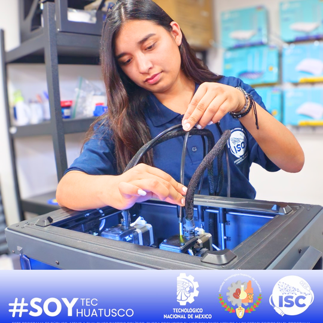
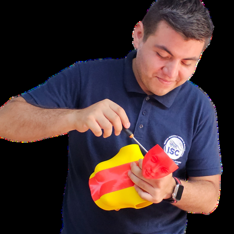
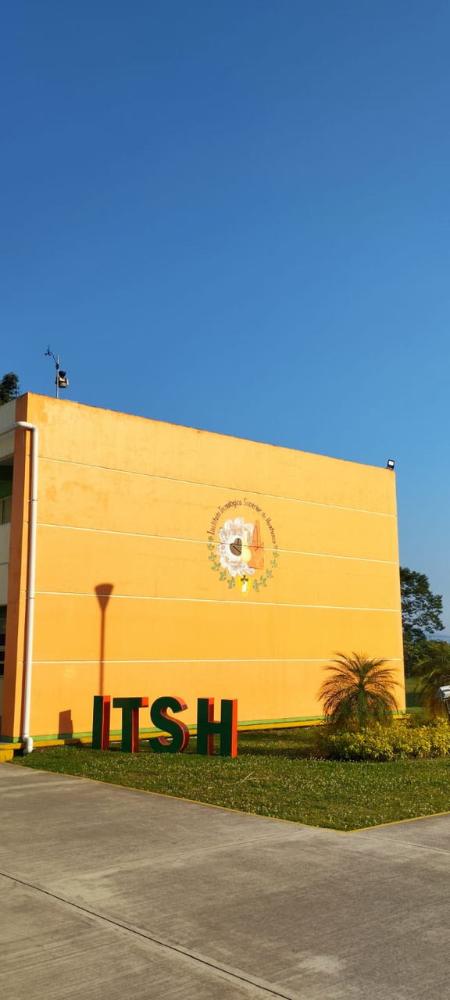
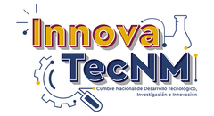

Visitas de estudio
Visita con tu grupo las principales empresas de la región de las Altas Montañas.
TU FUTURO COMIENZA AQUÍ · ISC
Ingeniería en Sistemas Computacionales en el Instituto Tecnológico Superior de Huatusco. Convierte tus ideas en soluciones con tecnología.
● Modalidad escolarizada y a distancia
01 / UNA CARRERA CON FUTURO
La persona egresada de Ingeniería en Sistemas Computacionales es un profesional que domina la programación de dispositivos, software, bases de datos y administración de redes.
Un ISC desarrolla proyectos innovadores con sentido social y empresarial. Puede desempeñar puestos como directivo en empresas y producir soluciones de calidad con tecnologías de información y comunicación.

02 / APRENDE HACIENDO
Además de tus materias, te ofrecemos cursos extracurriculares, talleres y conferencias para reforzar tu formación académica.
Y más oportunidades para seguir aprendiendo.
NOS AJUSTAMOS A TU HORARIO
La carrera de Ingeniería en Sistemas Computacionales está disponible en modalidad escolarizada y a distancia.
03 / TU EXPERIENCIA EN EL TEC

Visita con tu grupo las principales empresas de la región de las Altas Montañas.
¿Se te dificulta algún tema o materia? Solicita a tus docentes asesoría personalizada.
Al ser parte del Tecnológico Nacional de México, las materias que cursas son las mismas que se imparten en otros tecnológicos del país.
04 / TERMINA TU CARRERA
En solo 4 años de clases y un semestre de residencias profesionales, puedes cumplir la meta de tener tu carrera profesional.
Contamos con 10 opciones de titulación, entre las que destacan:
05 / TALENTO QUE TRASCIENDE
Proyectos, ideas y talento que han representado a nuestra comunidad en escenarios nacionales e internacionales.
Categoría robot limpiador de playa

EL SIGUIENTE PASO ES TUYO
¡Inscríbete y forma parte del TecNM, la institución pública de educación superior tecnológica más grande de México y América Latina!
Escríbenos por WhatsApp ↗